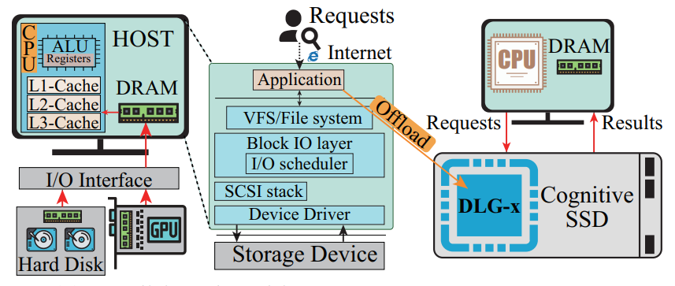

Yeming Ni is a first-year master student at Insititute of Computing Technology, Chinese Academy of Sciences (ICT, CAS), advised by Prof. Huawei Li and Prof. Shengwen Liang.
Previously, he ontained his Bachelor's degree form Hefei University of Technology, majoring in computer science.
Photo Credit: My nephew Bread.My research interests lie in computer architecture and computer system, currently with a focus on but not limited to Computational Storage and SmartNIC-enabled Computing.
The theme of my current research is to explore how these heterogeneous devices (SmartSSD, SmartNIC, FPGA, etc.) can be composed to maximize their potentials. My research agenda will unfold in three aspects:
I also have experience in designing machine learning accelerators.
However, I do not plan to continue exploring this direction in the future. Designing a novel accelerator often just means yet another accelerator among the many existing ones. Many times, these designed accelerators cannot be used in real-world scenarios and are only evaluated under simulation which makes me feel bored.
If you want to get a preliminary understanding of accelerators for machine learning, I strongly recommend taking UCB's EE290-2.
Unfortunately, I haven't published a single paper so far. The following content is just an example. Here, I apologize to the authors of the paper I used.

Data analysis and retrieval is a widely-used component in existing artificial intelligence systems. However, each request has to go through each layer across the I/O stack, which moves tremendous irrelevant data between secondary storage, DRAM, and the on-chip cache. This leads to high response latency and rising energy consumption. To address this issue, we propose Cognitive SSD, an energy-efficient engine for deep learning based unstructured data retrieval. In Cognitive SSD, a flash-accessing accelerator named DLG-x is placed by the side of flash memory to achieve near-data deep learning and graph search. Such functions of in-SSD deep learning and graph search are exposed to the users as library APIs via NVMe command extension. Experimental results on the FPGA-based prototype reveal that the proposed Cognitive SSD reduces latency by 69.9% on average in comparison with CPU based solutions on conventional SSDs, and it reduces the overall system power consumption by up to 34.4% and 63.0% respectively when compared to CPU and GPU based solutions that deliver comparable performance.
Integrated design of system hardware
Delivered tutorials on 5-stage RISC (based on RISC-V, MIPS or ARM ISA) CPU design and assisted in
solving
technical issues for the 150+ student class.
Fall 2023 @ HFUT.
| Address | Phone | |
|---|---|---|
| No. 6, South Road of Zhongguancun, Haidian District, Beijing. | (+86) 136-3709-9336 | yeming.ni@gmail.com |